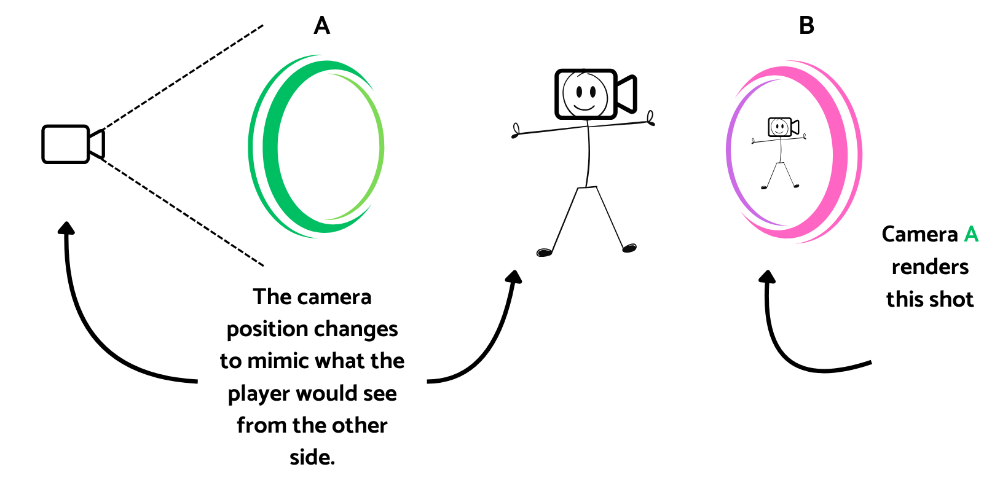
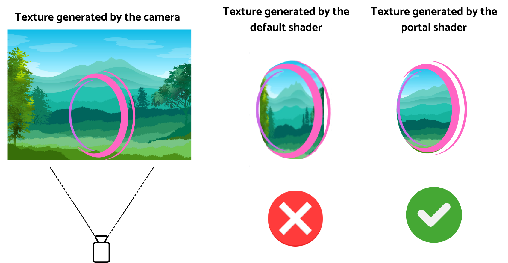
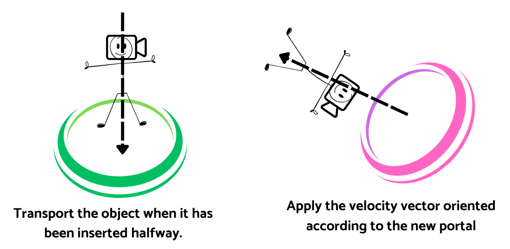

Portal Prototype
AEVI Dev Contest WinnerThis project was awarded in AEVI's (Spanish Video Games Association) Dev Contest 2025 for Best Programming Project.
The project consisted on recreating Portal's visual and physics properties accurately. Working with shaders and different techniques to achieve the effect. Next, I will briefly explain the system at a high level.
Each portal has the following structure: a plane, the mesh surrounding the portal, a camera, and one or more planes behind the portal. The system works as follows. A new material is assigned to the plane of each portal, using as its texture what the other camera sees. Each camera mimics the movements of the player’s camera with transformations, reflecting what would be seen through the portal.

The cameras generate a texture of what they see, which is then rendered on the other portal. However, a default shader will not work because the image would simply be projected onto the portal’s plane, flattening the view. To solve this, the shader must be modified to crop the image so that it appears as if the player is looking through a window into the other side.

Regarding teleportation, a collider detects when half of an object has crossed the portal and then changes its position to that of the other portal, rotating the velocity vector in the new direction. If the orientations of the portals are different, the rotation is interpolated so the player always ends up standing upright. It also possible to change the scale of the player depending on the size difference between the portals, but that depends on design decisions.

Some common issues:
If a portal is placed against a wall or the floor, it can be handled in the following way: each portal can optionally have a “Surface” assigned to it. This is an object that changes its collision layer when an object is trying to cross the portal. In other words, the collision between these two objects is disabled.
The next issue to solve is what happens when the camera that generates the texture passes through a wall and renders it over what it should actually be seeing. To solve this, modify the camera’s projection matrix so that the clip plane aligns with the start of the portal.
Finally, if the player gets too close to the portal plane and moves the camera, it is possible for the camera to cross the plane without the player doing so, which would reveal what is behind the plane and break the effect. The proposed solution is the following: use a kind of skybox surrounding the portal and apply the same texture used on the main plane. This way, if the camera crosses the main plane, it will still see as if it were correctly on the other side of the portal.